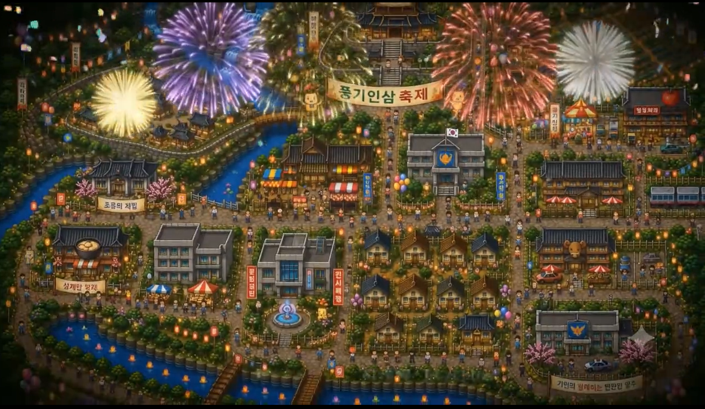

소리를 들으려면 영상의 음소거 버튼을 눌러 주세요.
Original Project © 2026 영주한국효문화진흥원

Made by 영광여자중학교 임정민 · 김세은 · 우채연 · 이예은
Supported by 황승록 주임
계속 진행하거나 게임을 처음부터 다시 시작할 수 있습니다.
생산·배달·장사·세금 납부를 통해 주민이 돌아오는 영주의 경제 순환을 만드는 게임입니다.
공동 저장고에서 농산물을 싣고 판매장이나 식당에 공급하세요.